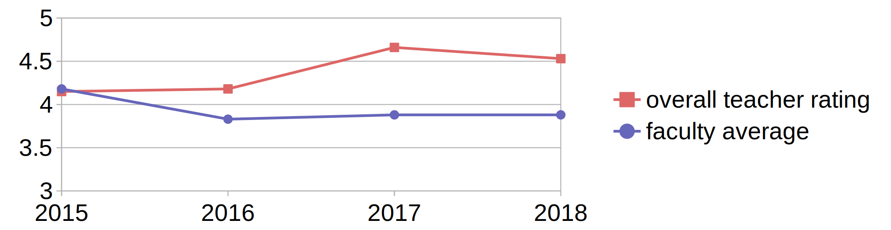

Global Knowledge Communication
and How to Make it
Efficient and Reliable
Tenure Interview of Tobias Kuhn
VU Amsterdam, 8 March 2019
Global Knowledge Communication Crisis

Global Knowledge Communication Crisis

Global Knowledge Communication Crisis

My Research on Global Knowledge Communication
- Nanopublications, Semantic Publishing, and FAIR
- Expressive Controlled Natural Languages
- Controversy and Bias
- Knowledge Networks
Background: Nanopublications

Nanopublication: Simplified Example

Nanopublication: Real Example

http://purl.org/np/RAzquSkwsTAZm61nReG6MOjXEXUx8fNVfdWnAzyn6sOhU
Trusty URIs make resources ...

Nanopublications, Semantic Publishing, and FAIR: Research Highlights
- Trusty Publishing
- Reliable Changing Linked Data
- Standardized Data Containers
- Genuine Semantic Publishing
- Linked Data for End Users
- Linked Reviewing Workflows
- FAIR Principles
- FAIR Workflows
Trusty Publishing: Nanopublication Network

[TODO: paper reference]
Nanopublication Network is Fast and Reliable

[TODO: paper reference]
Reliable Changing Linked Data with Nanopublications

[TODO: paper reference]
Reliable Changing Linked Data with Nanopublications

[TODO: paper reference]
Nanopublication Overhead Disappears and Turns Into Advantage
[TODO]
[TODO: paper reference]
Nanopublications as Standardized Data Containers
[TODO]
Top 3 namespaces in different positions:

[TODO: paper reference]
Cross-Dataset Analysis: Type Distribution Shows Diversity

[TODO: paper reference]
How Can We Make Linked Data Work for Web Developers and End Users?
[TODO]
Niels Ockeloen, Victor de Boer, Tobias Kuhn, and Guus Schreiber. Data 2 Documents: Modular and Distributive Content Management in RDF. In EKAW 2016. Springer, 2016. Best paper award.
Data 2 Documents
- Task 1: Creating a new d2d document by copying from an example
- Task 2: Adding a missing introduction article to the new document
- Task 3: Changing the title of the introduction article
- Task 4: Linking and thereby including an existing FOAF profile as article
- Task 5: Creating a new comment article and including it in the document
- Task 6: Linking and thus including comment articles of other participants
- Task 7: Changing an existing listing to show Dutch Painters instead of Prime Ministers of The Netherlands
- Task 8: Extending the article definition, render definition and template to show an additional field (creation date) in a listing of paintings
Data 2 Documents

Expressive Controlled Natural Languages: Research Highlights
- AIDA
- Thing Explainer Language
AIDA
Participants found AIDA sentences to be helpful to understand the main claims of papers:

Tobias Kuhn. Using the AIDA Language to Formally Organize Scientific Claims. In Proceedings of CNL 2018. IOS Press, 2018.
Thing Explainer

Tobias Kuhn. The Controlled Natural Language of Randall Munroe's Thing Explainer. In Proceedings CNL 2016. Springer, 2016.
Controversy and Bias: Research Highlights
- CAPOTE Controversy Model
- Bias in International Video News
CAPOTE Controversy Model
Confirmed by regression analysis based on crowdsourced data:
Benjamin Timmermans, Tobias Kuhn, Kaspar Beelen, Lora Aroyo. Computational Controversy. In Proceedings of Socinfo2017. Springer, 2017.
Bias in International Video News (preliminary results)


Knowledge Networks: Research Highlights
- Linked Open Data Cloud Networks
- Social Networks from Literature
Research Projects
- ...
Future Research
- ...
Education Highlights
- Master course Knowledge and Media (complete redesign)
- Bachelor Course Information Retrieval
- Master/Bachelor project supervision (overall 30 students)
Complete Redesign of the Master course Knowledge and Media
[TODO]
Bachelor Course Information Retrieval
[TODO]

Master/Bachelor project supervision
[TODO]
Management Highlights
- Main PI of Capturing Bias Project
- Co-PI of FAIR Workflows Project
- Supervisor of 3 Postdocs and 4 PhD Students
- Master IS Project Coordinator
- Exam Committee Member
- Education Committee Member of BSc/MSc AI
- Editor-in-Chief of Journal Data Science at IOS Press